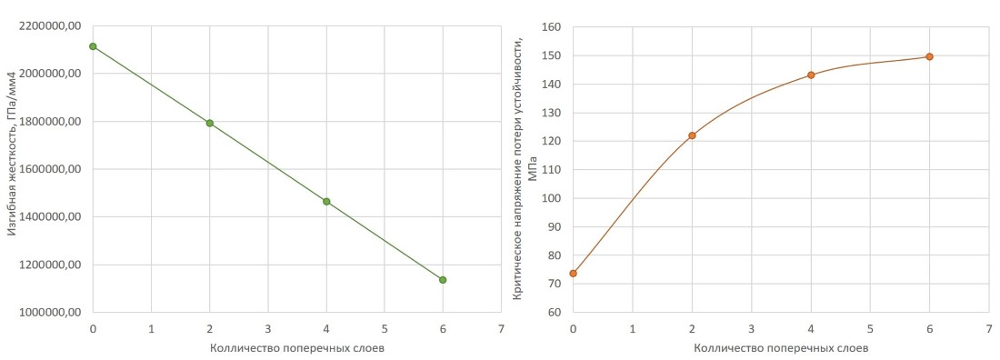
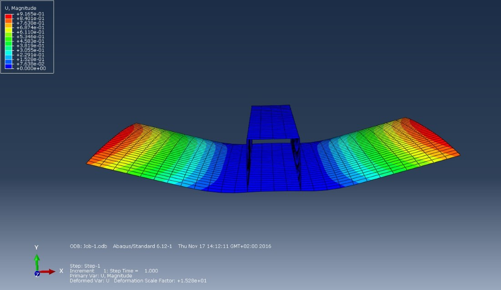
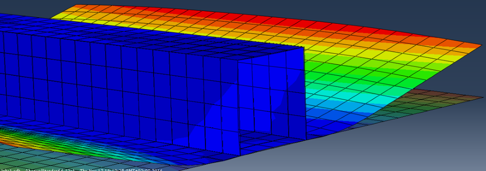
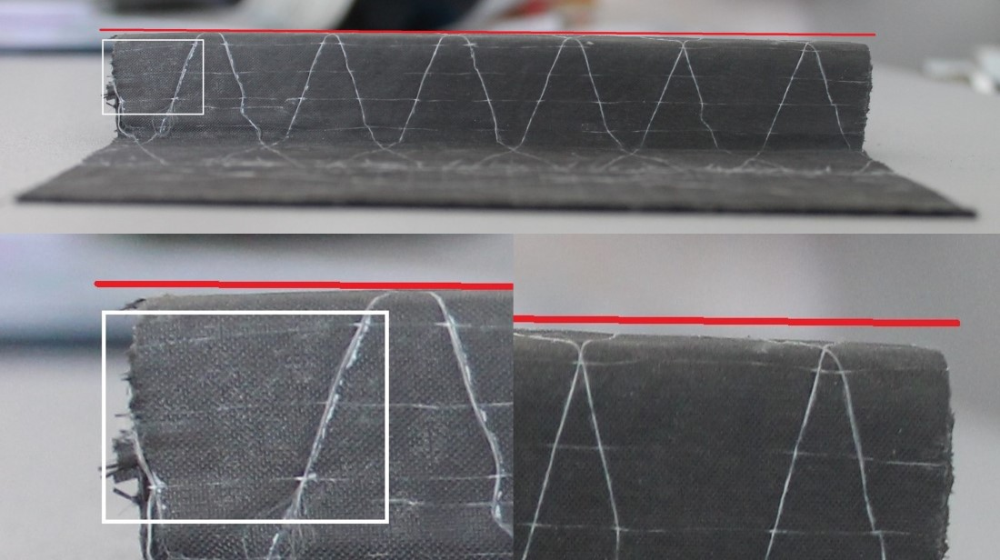
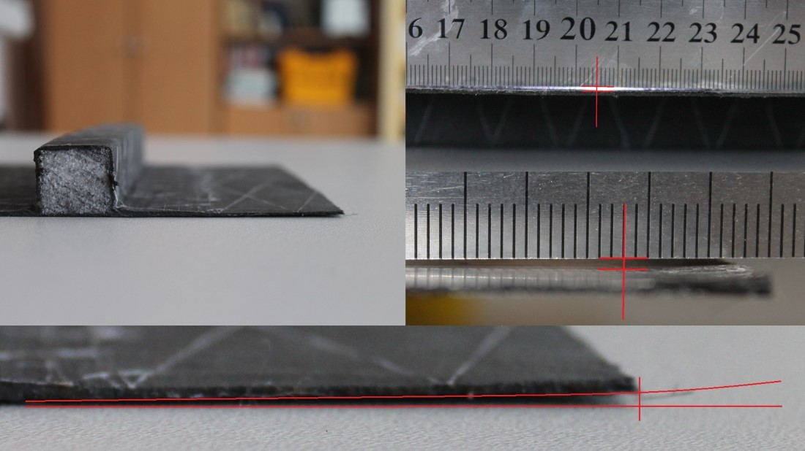

Technological stresses of integrated constructions
Design of stiffened composite panels with account process technological deformation.

Goals
The main purpose if to make an analytic model to considering technological deflected mode (Stress-Strain condition, or SSC) while design an integral structure. (By intagral means structure, that made from 2 or more parts and formed at the same time).
First step objectives: * Investigation influence of structural parameters integral construction on technological deflected mode in terms of stringer set panel. * Study of the possibility varying design parameters to ensure an acceptable level of technological deformations: Second step objectives:
Tasks of the second stage: * To develop an analytical method for forecasting the technological SSS of reinforced composite panels; * Examine of method reliability by comparison with FEA; * Comparison of FEA results with experiments.
(Image from internet)
Introduction
With the use of composite materials (next CM) in aircraft industry prioritize not only exploitation characteristics but also and technological. Especially time- and recourse-consuming process is molding (formation) composites. As the reason of that last time became so popular so-called Integral construction (next IC) - construction that consist of several structural components and made in one round of molding. In general it can be a smooth plate with reinforcement element such a stringers or ribs.
Besides apparent economic benefit, this structures also have advance properties against of usual structures.
But IC much more expose by temperature deformation and buckling. This happens because during forming in IC may be (and in a lot of cases is) used different materials, or (what definitely will)
However, integral constructions (next, IC) much more subjected to temperature deformations and buckling. It happened because during producing IC could be used different materials or the same materials could be laying with different orientation angle. Different Coefficient of Linear Temperature Extension (CLTE) produces unequal deformations along sample area. Process of cooling after molding produces inner stress. And, as a consequence, the sample is tense even before applying an external load to it. The paper considers various elements of integrated structures (with reinforcement, three-layer, etc.). the basic laws of technological SSS of these elements, by virtue of what are given practical recommendations for the design and manufacture of integrated composite structures.
In this paper was investigated panel, with the longitudinal width of the arrangement of the stringers. The objectives of this work are to develop an analytical method for predicting the technological SSS appearing in reinforced composite panels, necessary for optimization task formulation of the panel, taking into account the technological SSS, as well as the development method for designing reinforced panels, taking into account the limitations the amount of technological deformation.
Analytic model
 Where B – membrane stiffness, C – ‘mixed’ stiffness, M – torque from temperature, D – bending stiffness, kj – 1, 2, 3, e – deformation.
Where B – membrane stiffness, C – ‘mixed’ stiffness, M – torque from temperature, D – bending stiffness, kj – 1, 2, 3, e – deformation.
Longitudinal deflection is determined:

Transverse deflection of the stringer elements, panels:

Strength and deformation changes graph from replacement of the bearing composite layers to technological layers:
Where:
* Blue – deformation, mm. Right vertical axis;
* Orange – destruction index, %. Left vertical axis
Another depending of some characteristics on inserting technological layers. 
- Left graph – The Flexural stiffness, GPa/mm4;
- Right graph – Critical buckling forces, MPa.
Finite element analysis
Values of element deformations using the finite element method:


Experimental model
Deformation values could be seen with naked eye.


Source code
Code from python for temperature deformation definition could get from here. Instead of ‘materials’ module could just insert corresponding value of material physical characteristics.
Conclusion
In conclusion, we can say that the problem of technological stresses is particularly acute in integrated composite structures. All the more critical are minor changes in industries close to aviation and cosmonautics, auto- and moto industry, where aerodynamic performance of the entire structure depends on the observance of the theoretical contour.
According to experimental data, and the data from FEA - neglected technological deformations can have consequences. Critical in many cases. Consideration of such deformation and forecasting temperature stress on the stage of design will significantly reduce the probability of prepared products waste.
The given analytical method allows to predict with satisfactory accuracy the values of technological temperature deviations (deflections) in the reinforced panels depending on the material, structure, shape and size of the panel and stringers and even – the sequence of laying layers.